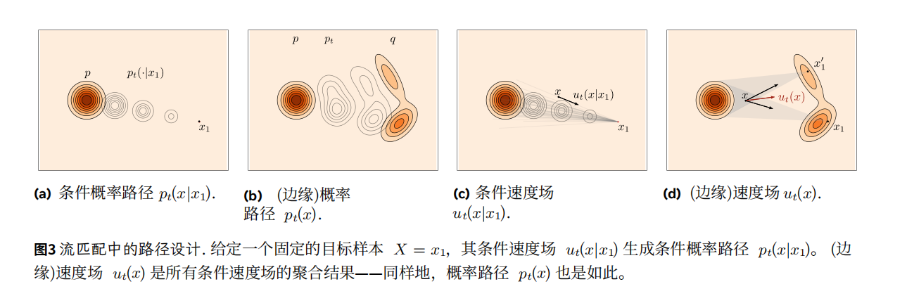

[CFM Overviw] Flow Matching 流匹配
AI的睡前小故事
在一个遥远的数字王国里，住着一位名叫小明的年轻魔法师。他的梦想是能够创造出全新的、独一无二的魔法生物。然而，要实现这个梦想并不容易，因为每个魔法生物都需要遵循一种神秘的目标分布，这种分布决定了生物的特征和属性。
小明知道，要创造出符合目标分布的魔法生物，他需要找到一条从源分布（一种简单而熟悉的分布，比如高斯分布）到目标分布的概率路径。这条路径就像是一张魔法地图，指引着他从已知的魔法世界走向未知的奇幻领域。
为了绘制这张魔法地图，小明需要学习一种叫做流匹配（Flow Matching）的古老魔法。这种魔法的核心是构建一个速度场 ut，它就像是一股无形的风，推动着魔法生物沿着概率路径演化。速度场由一个叫做流 ψt(x) 的魔法公式定义，这个公式描述了魔法生物在每个时间点的状态。
然而，要让这个魔法生效，小明必须遵守两个重要的边界条件：
起点的坚守：在时间 t=0 时，魔法生物必须保持其在源分布中的原始状态，即 ψ0(X0)=X0。
终点的追寻：在时间 t=1 时，魔法生物必须演化成符合目标分布的新形态，即 ψ1(X0)∼q。
为了确保魔法生物能够沿着正确的路径演化，小明需要使用一种叫做微分方程（ODE）的魔法工具。这个工具告诉他，速度场 ut 就是流 ψt(x) 的导数，它决定了魔法生物在每个时间点上的变化方向和速度。
小明明白，为什么要先构建一个概率路径，而不是让速度场直接决定概率路径。因为先设计好概率路径，可以确保魔法生物在起点和终点都符合要求，就像是给魔法之旅设定了明确的起点和终点，让旅程更加顺利和安全。
终于，小明掌握了流匹配的魔法，他开始从源分布中采样魔法生物的初始状态 X0，然后让它们沿着概率路径演化。在时间 t=1 时，他惊喜地发现，这些魔法生物已经变成了全新的、独一无二的形态，完全符合他的目标分布。
1 目标
从目标分布 \(q\) 采样一些样本，我们的目标是生成属于目标分布的新样本。
为了解决这个问题，流匹配的思想是，构建一条概率路径 \(p_t\) ，实际上是任意t时刻的数据分布，从源分布 \(p_0\)转换到目标分布\(p_1 = q\) 。
具体的说，FM（flow matching）的目标是用神经网络拟合速度场 \(u_t\)，用于唯一确定一个流 \(\psi_t(x)\)。如果从源分布任意采样一个 \(X_0\) 都满足 $$ X_t = \psi_t(X0) \sim p_t $$ 也就是可以得到t时刻这个样本的演化结果，并且符合我们概率路径的分布，我们就说这个速度场 \(u_t\) 确实生成了对应的概率路径 \(p_t\)
同时，流还应该满足边界条件 $$ \psi_0(X_0) = X_0 \ \psi_1(X_0) \sim q $$ 其中 \(u_t\) 和 \(\psi_t(x)\)的关系由微分方程ODE定义： $$ \frac{d}{dt} \psi_t(x) = u_t(\psi_t(x)) $$ 不难发现速度场就是流的导数，方向，或者说演化的速度。
图片和分布如何联系？
把一张图片看作高维空间中的一个数据点，整个数据集看作高维空间的概率分布。
什么是源分布？
是我们已知的分布，通常比较简单，比如高斯分布，因为他便于采样而且可能有良好的性质。也可能是和目标分布有关的分布，比如如果我们希望模型补全图片，或者对图片局部进行修改，那么源分布就是需要修改的图片。
什么是概率路径？
通常我们约定这个转换的过程起始时间步为0，终点为1。概率路径 \(p_t(0\le t \le 1)\) 可以看作一个关于t的函数，给定一个时间t，可以给出t时刻的数据分布。
为什么要先构建一个概率路径，让速度场拟合概率路径，而不是让速度场直接决定概率路径？
我觉得是先设计概率路径可以确保满足边界条件，保证结果正确。让速度场决定概率路径需要很多约束条件，非常难实现。
2 Quick Start

-
目标是找到一个流映射，将样本 \(X_0\) 从已知的源或噪声分布 q 映射到来自未知的目标或数据分布q 的样本 \(X_1\)。
-
为此，设计一个时间连续概率路径 \(p_t(0\le t \le 1)\)，在 \(p := p_0 和 q := p_1\) 之间插值。
-
在训练期间，使用回归来估计生成 \(p_t\) 的速度场 \(u_t\)。
-
要采样一个新的目标分布样本，可以从初始分布取样本\(X _0\) ，通过从速度场的积分，也就是流映射，得到对应的目标样本\(X _1\)
2.1 设计概率路径
理解流匹配的蓝图之后，首先进行上述的第一步：设计一条概率路径。
我们设计概率路径的思想是，如果你知道目的地，那你直线走过去就行。所以对于每一个目标样本，我们可以得到一个后验的路径，也可以称之为条件路径。即给定目标样本x，逆推什么路径能通往目标样本。通过多次采样，然后将这些条件路径聚合，我们就得到了从源分布到目标分布的一个概率路径。这样设计的概率路径我们称之为条件最优传输或者线性路径，这也很好理解，因为我们的条件路径就是从源样本到目标样本的最优路径。这样的概率路径满足以下的公式： $$ p_t(x) = \int p_{t|1}(x|x_1) q(x_1) \, dx_1, \quad \text{where } p_{t|1}(x|x_1) = \mathcal{N}(x | tx_1, (1-t)^2 I). $$ 使用这样的条件路径，我们可以通过采样源分布和目标分布，将他们线性组合得到随机变量 $$ X_t = t X_1 + (1-t) X_0 \sim p_t. $$
2.2 计算损失
设计概率路径之后，继续进行第二步：用神经网络生成的速度场 \(u_{t}^{\theta}\) 来拟合概率路径的速度场，用简单的MSE损失很容易得到损失函数：
但是在实践中，使用这个公式依然有一些问题，就是目标速度场 \(u _t\) 依然是一个非常复杂的对象，控制着两个高维分布的联合转换。幸好在我们设计的线性路径中，可以通过在单个目标上，对损失进行条件化，因为条件变量满足： $$ X_{t|1} = t x_1 + (1-t) X_0 \quad \sim \quad p_{t|1}(\cdot | x_1) = \mathcal{N}(\cdot | t x_1, (1-t)^2 I). $$ 所以可以得到条件速度，即从当前状态直线指向目标样本的速度： $$ u_t(x | x_1) = \frac{x_1 - x}{1 - t}, $$ 从而得到条件概率路径 \(p_{t|1}(\cdot | x_1)\)
因此我们就得到了刚才损失函数的可计算版本：
将速度带入,就得到了最简单的流匹配实现：
值得注意的是，这两个损失函数提供的学习梯度是一样的，后面的章节有证明（可能）

3 一般条件和边缘化技巧
省略的部分
quick start 中给出了一个利用条件路径来实现流匹配训练的方法，但是忽略了很多细节，更趋向于一种直觉的实现，留下了很多问题。比如：
-
为什么能在单个目标上进行速度和路径的条件化？
-
这样条件化的结果能得到我们想要的边缘速度场和边缘路径吗？（这里的边缘对应概率论中的边缘概率，指聚合结果）
3.1 边缘速度场
回忆我们刚刚提出的条件速度场，条件速度场能生成对应的条件概率路径： $$ u_t(\cdot | x_1) \text{ generates } p_{t|1}(\cdot | x_1). $$ 我们可以构造一个聚合条件速度场的方式，即在目标样本上对条件速度场进行平均，给出边缘速度场： $$ u_t(x) = \int u_t(x | x_1) p_{1|t}(x_1 | x) \, dx_1. $$ 这个公式的意思是：在已知当前状态x的情况下，给出目标样本分布的后验概率，然后对每个目标样本计算条件概率路径，将后验概率作为权重进行聚合。（总感觉有点VAE的样子？先把当前状态编码到目标样本的分布，再解码回来）
也可以将边缘概率写作条件期望，给定当前状态x的情况下，随机变量 \(u_t(X_T|X_1)\) 的期望，也就是给定条件变量\(X_T\)情况下，后验计算目标样本 \(X_1\)的分布，然后 \(u_t\)其实是以来于这两者的联合分布的随机变量： $$ u_t(x) = \mathbb{E} \left[ u_t(X_t | X_1) \mid X_t = x \right], $$
3.2 证明边缘路径
这里首先要给出一个引理：速度场 \(u_t\) 能生成对应的概率路径 \(p_t\) 等价于满足连续性方程（证明可以查看Flow Matching For General Modeling）： $$ \frac{d}{dt} p_t(x) + \text{div}(p_t u_t)(x) = 0, $$ 在已知条件速度场能生成条件路径的情况下，给出证明：

（i）由交换积分和微分顺序得到
（ii）由条件概率和条件速度场满足连续性方程得到
（iii）是 $$ \frac{p_{t|Z}(x | z) p_Z(z)}{p_t(x)} = p(z|x) $$ 积分再乘 \(p_t(x)\)得到